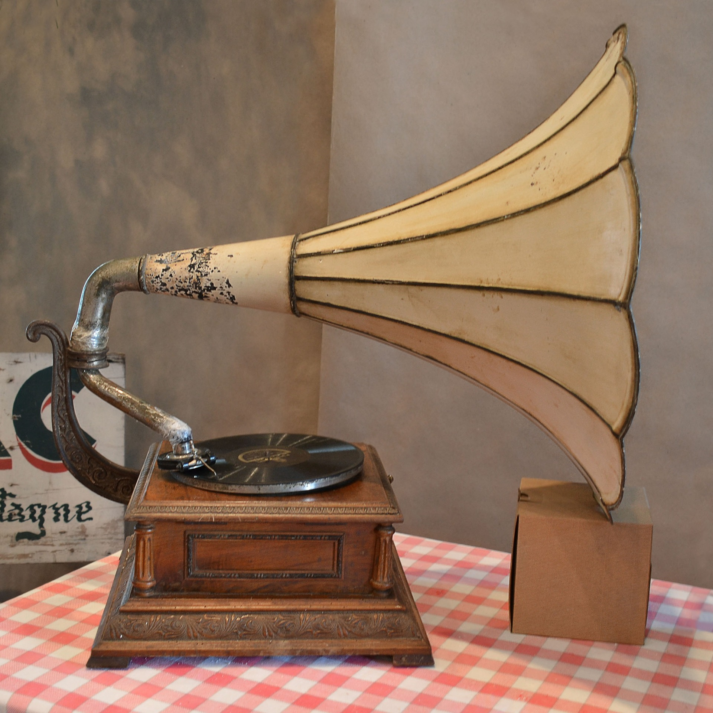
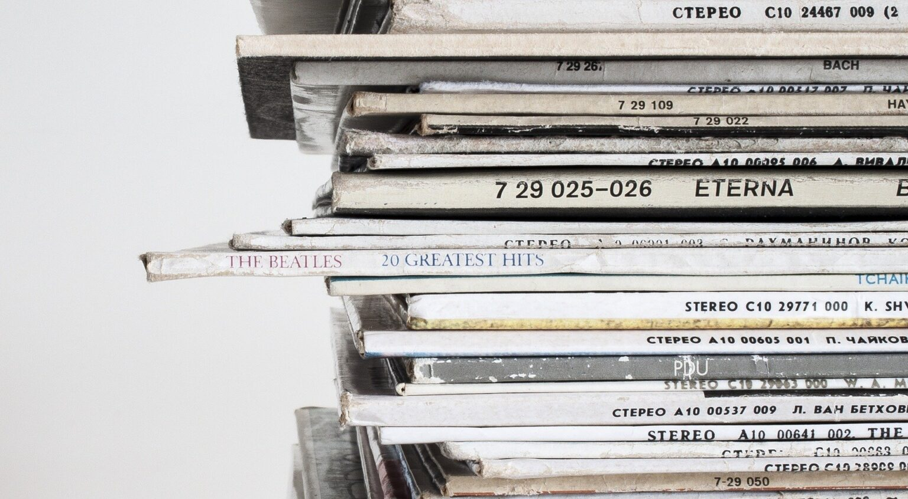

GRAMOPHONE +
The original recordings of musicians, which may have been recorded on tape or digital methods, are sometimes re-issued on vinyl.
PLAYER +
Modern units can play audio formats other than the original CD PCM audio coding, such as MP3, AAC and WMA.

CDS +
Compact disc (CD) is a digital optical disc data storage format that was co-developed by Philips and Sony and released in 1982.
MUSICAL INSTRUMENT +
Musical instruments evolved in step with changing applications and technologies.
VINYL +
In the mid-2000s, gradually, records made of any material began to be called vinyl records, or simply vinyl.
MOVIES +
The making and showing of motion pictures became a source of profit almost as soon as the process was invented.


Copyright© 2020 · All Rights Reserved · JAJA Record Store